Citrix Provisioning Master Device - Preparation
Navigation
This article applies to all 7.x versions of Citrix Provisioning, including 2411, 2402 LTSR, and 2203 LTSR.
- Change Log
- General Preparation
- Pagefile
- VMware ESXi/vSphere
- Hyper-V
- Antivirus
- Boot ISO
- Install Provisioning Target Device Software
- Target Device Software Tweaks - prevent drive for cache, excessive retries, hide Provisioning icon
:idea: = Recently Updated
Change Log
- 2024 Dec 4 - updated Target Device Software section for version 2411
- 2023 Dec 23 - Converting BIOS vDisks to UEFI at Citrix Docs.
General Preparation
- In Provisioning 2311 and newer, make sure the VDA machine is UEFI instead of BIOS. If not, see Converting BIOS vDisks to UEFI at Citrix Docs.
- Build the VDA like normal.
- Update VMware Tools.
- Join the machine to the domain.
- Chrome and Edge - CTX212545 PVS 7.6 CU1: Write cache getting filled up automatically recommends disabling Google Chrome automatic updates.
Pagefile
Ensure the pagefile is smaller than the cache disk. For example, if you allocate 20 GB of RAM to your Remote Desktop Session Host, and if the cache disk is only 15 GB, then Windows will have a default pagefile size of 20 GB and Citrix Provisioning will be unable to move it to the cache disk. This causes Citrix Provisioning to cache to server instead of caching to your local cache disk (or RAM).
The cache disk size for a session host is typically 15-20 GB. The cache disk size for a virtual desktop is typically 5 GB.
- Open System. In 2012 R2 and newer, you can right-click the Start button, and click System.
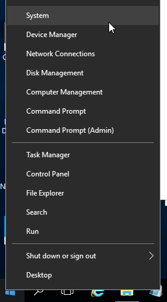
- For older versions of Windows, you can click Start, right-click the Computer icon, and click Properties. Or find System in the Control Panel.
- Click Advanced system settings.
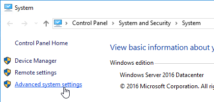
- On the Advanced tab, click the top Settings button.
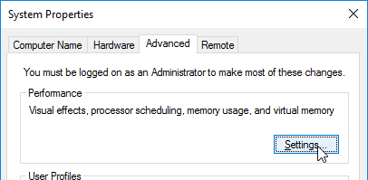
- On the Advanced tab, click Change.
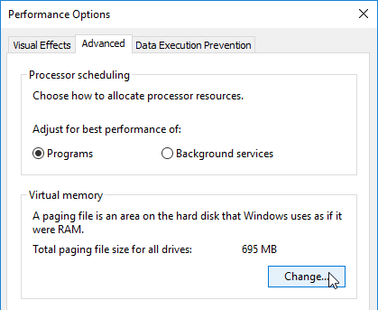
- Either turn off the pagefile or set the pagefile to be smaller than the cache disk. Don’t leave it set to System managed size. Don't forget to click the Set button. Click OK several times.
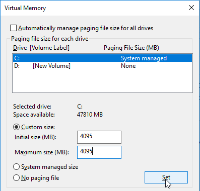
VMware ESXi/vSphere
VMXNET3
E1000 is not supported - For VMware virtual machine, make sure the NIC is VMXNET3. E1000 is not supported and will affect performance.
View hidden adapters in Device Manager and delete any ghost VMXNET3 NICs.
-
At the command prompt, type the following lines, pressing ENTER after each line
-
Open the View menu, and click Show hidden devices.
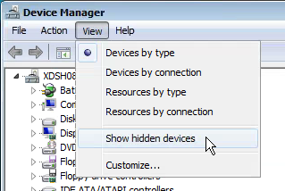
- Expand Network adapters, and look for ghost NICs (grayed out). If you see any, remove them.
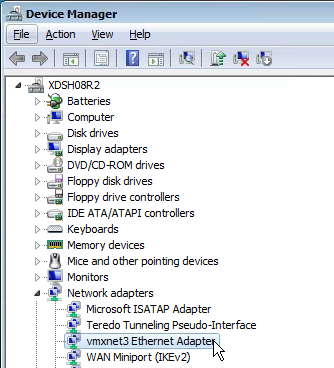
SATA Controller
Citrix Provisioning does not support the SATA Controller that became available in ESXi virtual machine hardware Version 10. Change the CD/DVD Drive to IDE instead of SATA.
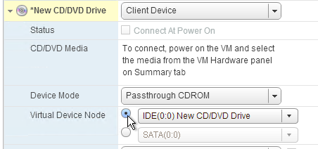
Then remove the SATA Controller.
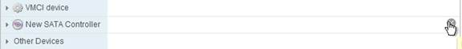
NTP
Ensure that the ESXi hosts have NTP enabled.
DHCP
After creating the vDisk, follow the instructions at Provisioning Services 6 Black Screen Issue to clear any DHCP address in the vDisk.
Slow Boot Times
Citrix Provisioning Target Devices in VMware ESX boot slow intermittently after upgrading the ESX hosts from 5.0 to 5.1.
Citrix CTX139498 Provisioning Services Target Devices Boot Slow in ESX 5.x: Use the following command to disable the NetQueue feature on the ESX hosts:
Hyper-V
- Generation 2 support is available in Citrix Provisioning 7.8 and newer.
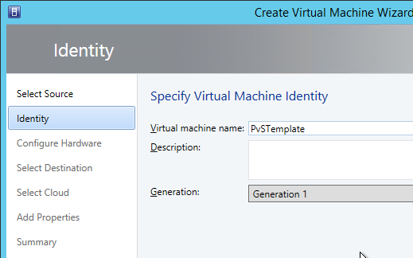
- If Generation 1, each Hyper-V Citrix Provisioning Target Device must have a Legacy network adapter. Legacy NIC supports Network Boot, while the Synthetic NIC does not.
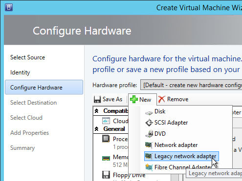
- Give the Legacy Network Adapter a Static MAC address. If you leave it set to all zeros then VMM will generate one once the VM is deployed.
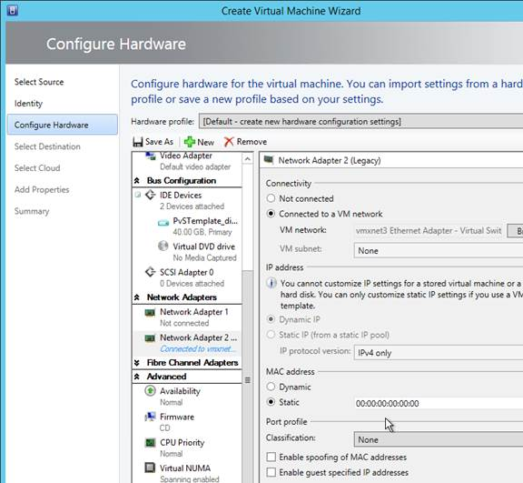
- When you reopen the virtual machine properties there will be a Static MAC address.
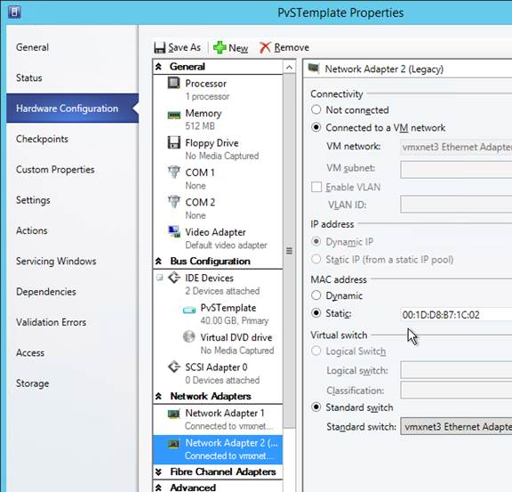
- Set the Action to take when the virtualization server stops to Turn off virtual machine. This prevents Hyper-V from creating a BIN file for each virtual machine.
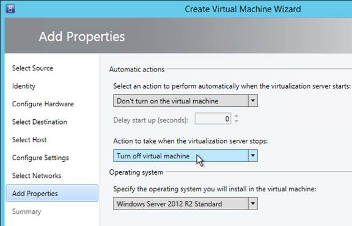
- To set a VLAN, either create a Logical Network and Network Site.
- Or use Hyper-V Manager to set the VLAN on each virtual machine NIC.
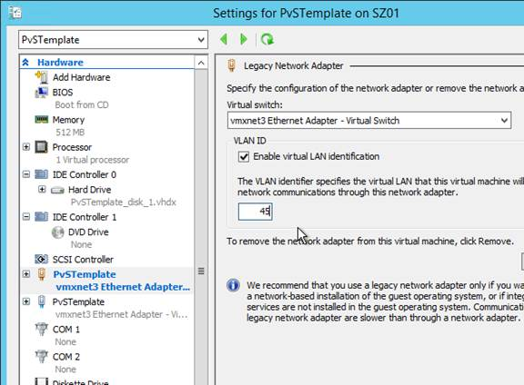
Antivirus Best Practices
Citrix’s Recommended Antivirus Exclusions
Citrix Tech Zone: Endpoint Security, Antivirus, and Antimalware Best Practices.
Citrix Blog Post Citrix Recommended Antivirus Exclusions: the goal here is to provide you with a consolidated list of recommended antivirus exclusions for your Citrix virtualization environment focused on the key processes, folders, and files that we have seen cause issues in the field:
- Set real-time scanning to scan local drives only and not network drives
- Disable scan on boot
- Remove any unnecessary antivirus related entries from the Run key
- Exclude the pagefile(s) from being scanned
- Exclude Windows event logs from being scanned
- Exclude IIS log files from being scanned
See the Blog Post for exclusions for each Citrix component/product including StoreFront, VDA, Controller, and Provisioning. The Blog Post also has links to additional KB articles on antivirus.
Sophos
Sophos Anti-Virus for Windows 2000+: incorporating current versions in a disk image, including for use with cloned virtual machines: This procedure will make sure that the produced target/cloned computers:
- Get their distinct identity with Enterprise Console, under which they can be subsequently managed.
- Have the desired version of Sophos Anti-Virus already installed and configured on the created image.
Kaspersky
CTX217997 BSOD Error: "STOP 0x0000007E CVhdMp.sys with Kaspersky antivirus: install Kaspersky Light Agent using the /pINSTALLONPVS=1 switch.
Boot ISO
You can create a Citrix Provisioning boot ISO for your Target Devices. This is an alternative to PXE.
- On the Provisioning server, run Citrix Provisioning Boot Device Manager.
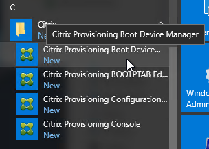
- In the Specify the Login Server page, add the IP addresses of Provisioning servers.
- Check the box next to Target device is UEFI firmware. Click Next.

- In the Set Options page, check the box next to Verbose Mode, and click Next.
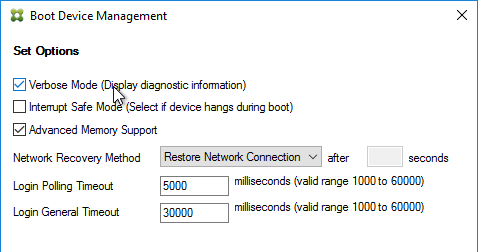
- In the Burn the Boot Device page, do not click Burn. If you do, then you will have a very bad day. Instead, look in the Boot Device section, and change it to Citrix ISO Image Recorder. Then you can click Burn.
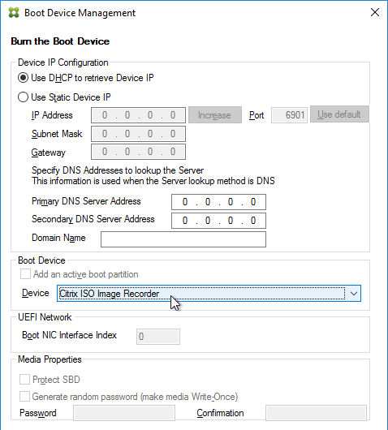
- Save the iso and upload it to a datastore or VMM library.
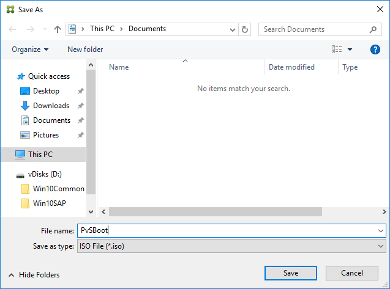
- You can now configure your Target Devices to boot from this ISO file.
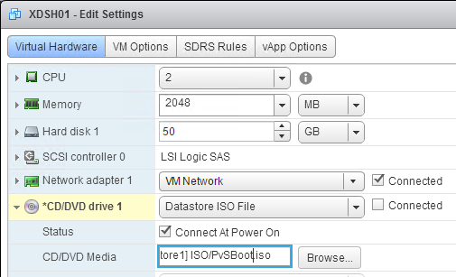
Target Device Software Installation
The Target Device Software version must be the same or older than the Citrix Provisioning server version.
The install instructions for all Target Device versions 2411 and older are essentially the same.
Do the following on the master VDA you intend to convert to a vDisk. Try not to install this while connected using RDP or ICA since the installer will disconnect the NIC.
- Ghost NICs - Your Target Device might have ghost NICs. This is very likely to occur on Windows 7 and Windows 2008 R2 VMs when using VMXNet3. Follow CTX133188 Event ID 7026 - The following boot-start or system-start driver(s) failed to load: Bnistack to view hidden devices and remove ghost NICs.
- Go to the downloaded Citrix Provisioning and run PVS_Device_x64.exe.

- If you see a requirements window, then click Install to install prerequisites.

- In the Welcome to the Installation Wizard for Citrix Provisioning Target Device x64 page, click Next.
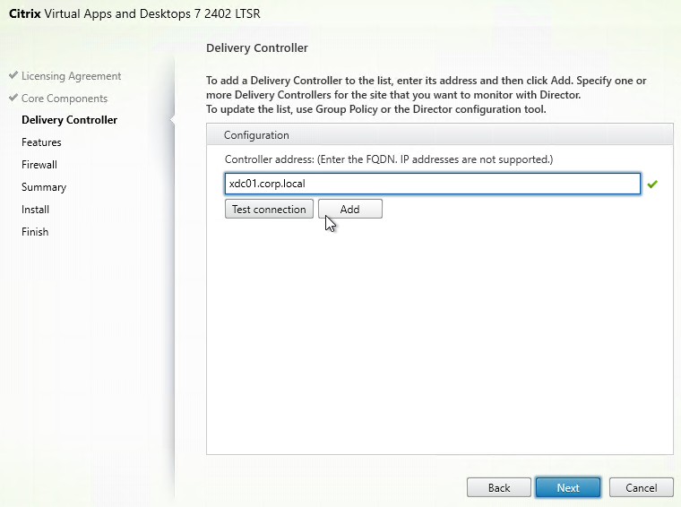
- In the License Agreement page, select I accept, and click Next.
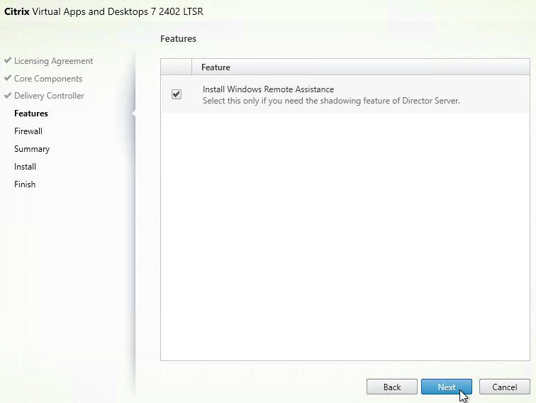
- In the Customer Information page, click Next.
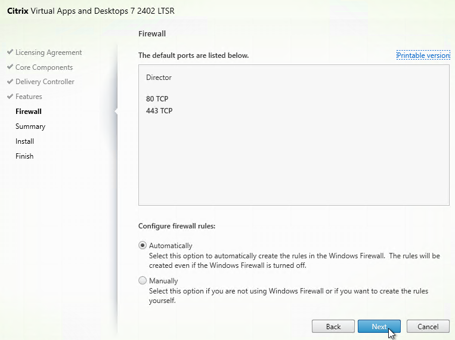
- In the Destination Folder page, click Next.
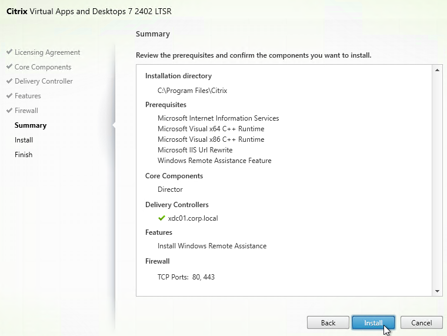
- In the Ready to Install the Program page, click Install.
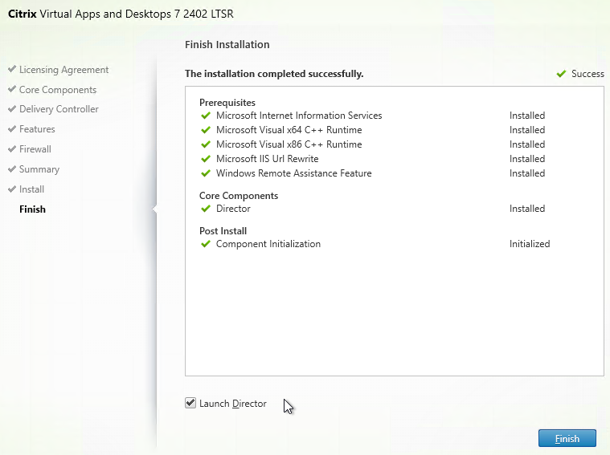
- In the Installation Wizard Completed page click Finish.

- Click Yes if prompted to restart.

- The Imaging Wizard launches. Review the following tweaks. Then proceed to converting the Master Image to a vDisk.
Target Device Software Tweaks
Asynchronous I/O
Prevent Drive for Write Cache
From Citrix Community PVS Target Device wrong drive letters: The driver that determines which partition to place the local cache searches for a file named: {9E9023A4-7674-41be-8D71-B6C9158313EF}.VDESK.VOL.GUID in the root directory. If the file is found it will not place the write cache on that disk.
Excessive Retries
If VMware vSphere, make sure the NIC is VMXNET3.
Hide Citrix Provisioning Systray Icon
From Citrix CTX572340 Hide "Virtual Disk status" icon from System tray on the endpoints: Add the reg value below:
-
HKLM\Software\Citrix\ProvisioningServices\StatusTray
- ShowIcon (DWORD) = 0
This however will disable to all users, even Admins. Solution: Apply the HKCU key below based on Group membership (Group Policy Preferences > Item Level Targeting):
-
HKEY_CURRENT_USER\SOFTWARE\Citrix\ProvisioningServices\StatusTray
- ShowIcon (DWORD) = 0
Once that is in place the icon will go away.